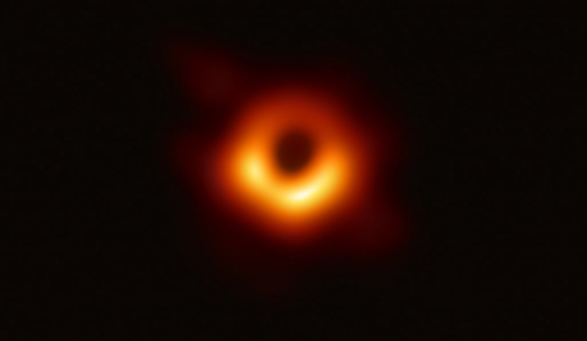

UY Scuti (BD-12°5055) is an extreme red hypergiant or red supergiant star in the constellation Scutum. It is considered one of the largest known stars by radius and is also a pulsating variable star, with a maximum brightness of magnitude 8.29 and a minimum of magnitude 10.56. It has an estimated radius of 1,708 solar radii (1.188×109 kilometres; 7.94 astronomical units), thus a volume nearly 5 billion times that of the Sun.*
UY Scuti
Ton 618

TON 618 (short for Tonantzintla 618) is a hyperluminous, broad-absorption-line, radio-loud quasar and Lyman-alpha blob[2] located near the border of the constellations Canes Venatici and Coma Berenices, with the projected comoving distance of approximately 18.2 billion light-years from Earth. It possesses one of the most massive black holes ever found, at 66 billion M☉.*
Shapley Supercluster
The Shapley Supercluster or Shapley Concentration (SCl 124) is the largest concentration of galaxies in our nearby universe that forms a gravitationally interacting unit, thereby pulling itself together instead of expanding with the universe. It appears as a striking overdensity in the distribution of galaxies in the constellation of Centaurus. It is 650 million light-years away.*